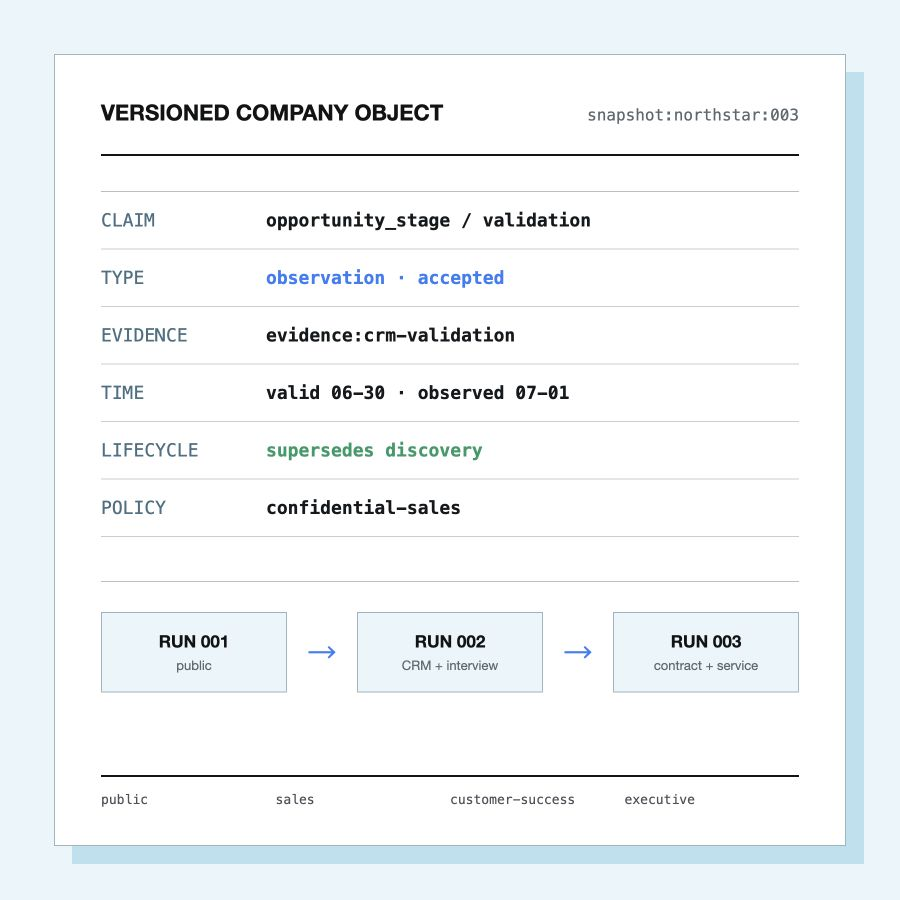

公开资料
建立公司与产品边界
NEW工业运营软件
NEW高韧性平台定位
AI 创新产品 · 销售智胜 · 原子 Skill
让每条客户结论都说清：
从哪来、何时成立、为何变化、谁能看

大家好，我的作品是 Company Distiller，申报销售智胜赛道和原子 Skill 路线。它面向大客户经理在拜访和账户复盘前的单客认知整理，把公开资料、CRM、访谈、合同、工单和产品使用数据沉淀为可追溯、可更新、按受众交付的公司对象。
我没有再做一份会过期的企业摘要，而是让每条客户结论都知道自己从哪里来、什么时候成立、为什么改变、谁可以看。
01 · 真问题
合成演示情境；当前尚缺实际客户经理访谈与真实流程计时。
02客户经理在拜访或账户复盘前，通常需要把六类材料拼在一起。难点不只是找资料，而是判断哪些信息能采信、是否仍有效、冲突是否解决，以及能否交付给当前受众。
这里必须坦诚：当前问题模型已经在原型中实现，但还没有真实用户访谈和现行流程基线。后续至少用一位真实客户经理和一个匿名账户完成同输入对照。
02 · 真工具
AI 由 Codex Skill 宿主执行。 Fixture 用于确定性回归，不冒充模型输出。
03AI 不是外壳。它负责无法靠枚举规则完成的语义理解，包括主体边界、原子 Claim、关系和冲突候选。确定性程序不相信自由文本，负责 Schema、证据、双时间、策略、生命周期和最终写入。
当前 AI 调用由 Codex Skill 宿主执行，仓库脚本没有独立模型 API。现场最好展示一次真实的 $company-distiller 运行记录，避免评委把 fixture 流水线误判为全部产品。
03 · 核心技术
claim:opportunity-stage-validation// CRM 阶段只是卖方观察
{
"subject_id": "opportunity:orbit-security",
"predicate": "opportunity_stage",
"value": "验证阶段（validation）",
"claim_type": "observation",
"decision": "accepted",
"valid_from": "2026-06-30",
"observed_at": "2026-07-01",
"evidence_ids": ["crm-validation"],
"supersedes": ["...discovery"],
"policy_id": "confidential-sales"
}
Claim = 主体 + 谓词 + 值 + 证据 + 双时间 + 策略 + 生命周期
“高使用量可能意味着满意度”只保留为 proposed hypothesis，不进入当前快照。
证据：合成样例 claims.jsonl；字段为真实项目 Schema。
04Claim 是整个系统的最小知识单元。以 CRM 商机阶段为例，它的类型是 observation，同时记录业务有效时间和系统观察时间；它显式替代早期 discovery，但不会删除历史；策略决定它只能进入销售视图。
这让 AI 不能把“看起来合理”直接写成事实。例如使用量推导满意度只有弱证据，所以保持 proposed hypothesis，不发布。
04 · 多轮蒸馏
建立公司与产品边界
NEW工业运营软件
NEW高韧性平台定位
REINFORCED公司类别获新证据
NEW商机 discovery
NEW集中采购陈述
SUPERSEDEDdiscovery → validation
RETRACTED集中采购陈述撤回
CONFLICTED高韧性 ↔ SEV-1
PROPOSED使用量 → 满意度，未发布
Northstar Industries 为完全合成企业；变化字段来自 changes/index.jsonl。
05第一轮只有公开资料；第二轮加入 CRM 和访谈；第三轮加入合同、工单和使用数据。核心不是“又生成了一份报告”，而是显式记录了强化、替代、撤回、冲突以及不发布。
现场重点展示四条变化：discovery 被 validation 替代；采购陈述撤回；高韧性定位与 SEV-1 保持冲突；使用量推导满意度没有进入快照。
05 · 受控交付
2 当前 Claim
公司类别与产品定位
内部商业 Claim 不可见
提示存在 1 个被遮蔽冲突
最小公开视图3 当前 Claim
商机 validation 阶段
可见采购陈述撤回
合同义务仍不可见
账户规划视图4 当前 Claim
37 个周活跃站点
SEV-1 与定位冲突
不包含合同金额
产品使用与服务视图6 当前 Claim
合同义务与商机阶段
完整冲突与撤回记录
覆盖全部四类关系
受限管理复盘视图共同基线：snapshot:northstar:003 · 语义策略过滤 ≠ 身份认证 / 系统访问控制
06这四份视图来自同一个 snapshot，不是四次随机改写。公众看不到内部商业信息，销售看到商机阶段，客户成功看到使用与服务信号，管理层才能看到合同义务和完整冲突。
投影不复制原始 CRM、合同、工单和遥测载荷。但当前只是语义策略过滤，不是操作系统级访问控制，生产环境仍需身份认证、加密和租户隔离。
06 · 真数据
验收基线：commit 5d5043f · acceptance-report.json · 2026-08-14 复验。
07我不把一段成功演示当作质量证明，所以发布条件被做成 16 项可执行门禁；5 项测试全部通过，15 个 Schema 可解析，三轮运行和四类投影可从零重建，两次全新重放哈希一致。
这些只证明结构、引用、状态、策略和确定性。它们不证明模型抽取质量，也不证明节省工时或提升赢单率。0.13 秒与 1.19 秒只是不含模型推理和人工审核的本地技术时长，不作为本页大指标。
07 · 下一关
多源企业本体与 Claim 契约
增量运行、快照与四类投影
16 项确定性发布门禁
n=1 同输入探索性对照
扩展到 n≥10 匿名账户
中位耗时 · 准确率 · 可追溯率 · 误投影数
连接器与人工候选审核
事务账本与策略版本化
认证、加密、租户隔离与审计
让 AI 对每个结论的来源、时间、变化和可见范围负责。
建议决策：进入匿名真实账户验证，而不是继续堆叠工程指标。
08Company Distiller 当前已经是可运行参考原型，但下一步最重要的不是再增加工程指标，而是用真实账户验证业务价值。最低从一个匿名账户和一位真实目标用户开始，明确标注 n=1；随后扩展到不少于十个账户。
产品化还需要连接器、审核流、事务数据库和完整安全基础设施。最终目标不是让 AI 更大胆地下结论，而是让它对每个结论的来源、时间、变化和可见范围负责。